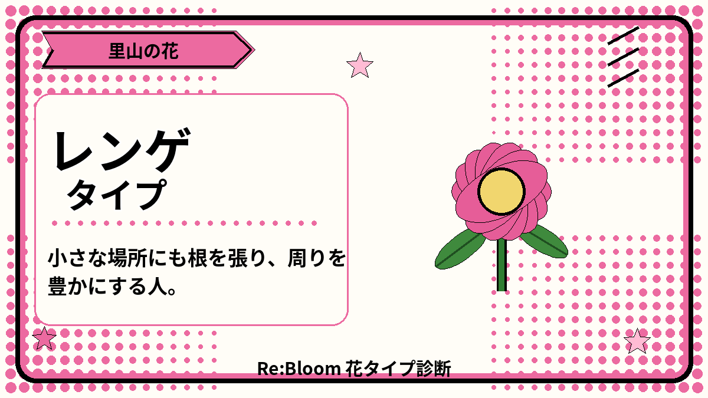

花タイプ診断REBLOOM FLOWER TYPE
あなたの中に、
どんな花が咲く？
人との関わり方、動き方、考え方の傾向を56の質問から読み解き、30種類以上の花タイプで表示します。結果から、自分に合う応援の入口も見つけられます。
PCなら〈1・2・3〉キーで、テンポよく回答できます。

はじめる前にBEFORE YOU START
考え方の傾向を、
花に重ねて。
直感で答えてください。途中の回答は端末に保存され、あとから続けられます。
準備ができたら、種をまこう。
正解はありません。「そう思う」「どちらでもない」「そう思わない」の3つから選びます。
回答はこの端末内にのみ保存されます。
1 / 560%
1 そう思う2 どちらでもない3 そう思わないBackspace ひとつ戻る
答えるたびに、小さな花が咲きます。
気をつけたいこと
人との関わり方
力を発揮しやすい場
Re:Bloomでの関わり方
花のプロフィール
原産地
開花時期
花言葉
5つの軸
花花が違うから、
花が違うから、
関わり方も違っていい。
現地へ行く、応援する、伝える、専門性を貸す。自分らしい入口から、能登の土地に関わってください。